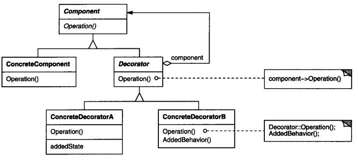

装饰器(Decorator)模式
- 动态地给一个对象添加一些额外的职责或者行为。就增加功能来说， Decorator模式相比生成子类更为灵活。
- 装饰器模式提供了改变子类的灵活方案。装饰器模式在不必改变原类文件和使用继承的情况下，动态的扩展一个对象的功能。它是通过创建一个包装对象，也就是装饰来包裹真实的对象。
- 当用于一组子类时，装饰器模式更加有用。如果你拥有一族子类（从一个父类派生而来），你需要在与子类独立使用情况下添加额外的特性，你可以使用装饰器模式，以避免代码重复和具体子类数量的增加。

抽象组件角色(Component)：定义一个对象接口，以规范准备接受附加责任的对象，
即可以给这些对象动态地添加职责。
具体组件角色(ConcreteComponent) :被装饰者，定义一个将要被装饰增加功能的类。
可以给这个类的对象添加一些职责
抽象装饰器(Decorator):维持一个指向构件Component对象的实例，
并定义一个与抽象组件角色Component接口一致的接口
具体装饰器角色（ConcreteDecorator):向组件添加职责。